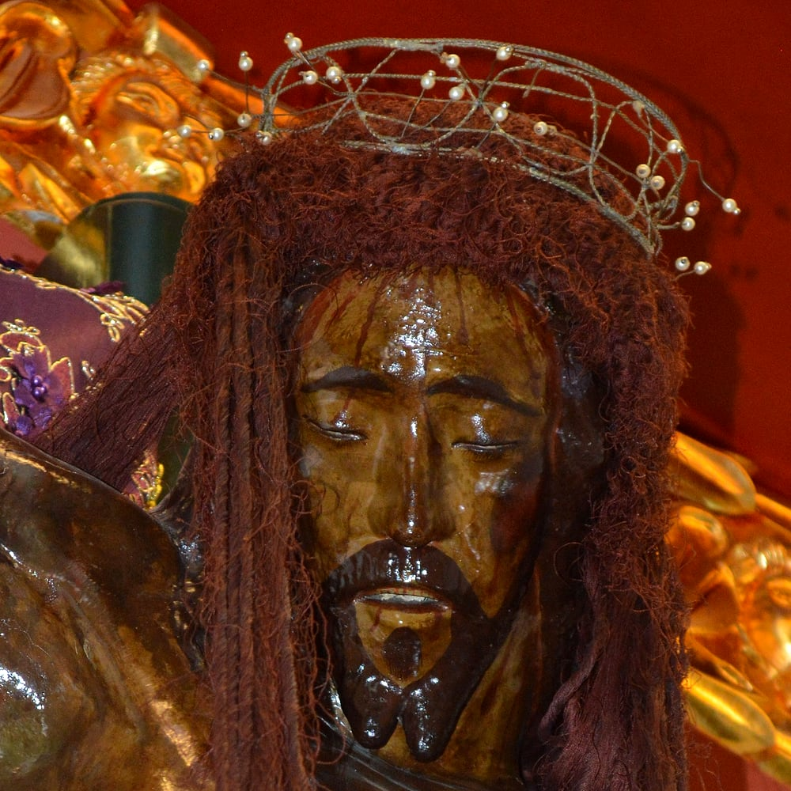

Iglesia Mayor de San Jerónimo
Fe, arte y memoria en el corazón de San Jerónimo
Un templo vivo de la provincia de Andahuaylas, en Apurímac. Recorre sus imágenes, su retablo dorado y las historias de la comunidad que lo ha cuidado por generaciones.
